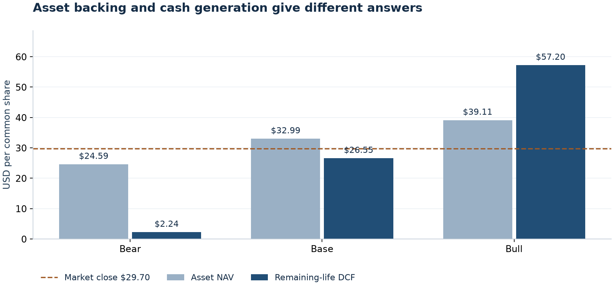
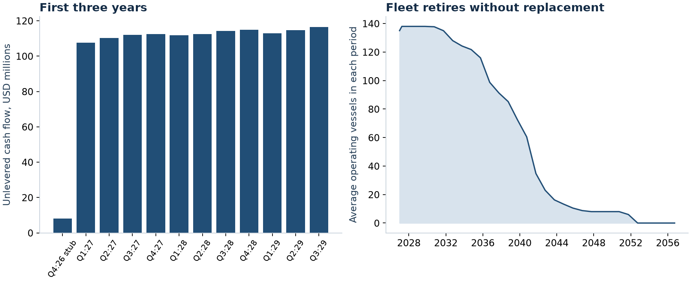

Read the two valuation lenses together
The base scenario places the share price below estimated fleet asset NAV and above the value supported by modeled remaining-life cash flows. This is a conditional research result. The gap does not establish mispricing: asset marks, the cash bridge, future rates and fleet renewal can change the conclusion.
Start here
Open the Excel model, read Summary, then use Assumptions D5 to switch cases. Blue text on pale yellow cells marks editable assumptions. NAV, Cash Flow and Debt explain the result; Sources and Checks let you audit it.
This HTML report is a saved Python run. Excel edits recalculate Excel only. Change the reviewed input files and rerun the command to refresh this report and the notebook.
Three explicit scenarios
Each case changes freight rates, vessel marks, costs, off-hire, retirement age, financing and discount assumptions together. These are scenario values, not probabilities or price targets.

| Case | NAV / share | DCF / share | Price / NAV | Next-year UFCF |
|---|---|---|---|---|
| Bear | $24.59 | $2.24 | 1.21× | $109.5m |
| Base | $32.99 | $26.55 | 0.90× | $442.5m |
| Bull | $39.11 | $57.20 | 0.76× | $750.7m |
DCF sensitivity
Rows vary the total discount rate; columns multiply all open class rates. Other base assumptions stay fixed. Values are USD per share.
| 0.8× rates | 0.9× rates | 1.0× rates | 1.1× rates | 1.2× rates | |
|---|---|---|---|---|---|
| 8% | $17.74 | $24.09 | $30.43 | $36.77 | $43.11 |
| 9% | $16.41 | $22.41 | $28.40 | $34.39 | $40.38 |
| 10% | $15.21 | $20.88 | $26.55 | $32.23 | $37.90 |
| 11% | $14.12 | $19.50 | $24.88 | $30.26 | $35.64 |
| 12% | $13.12 | $18.24 | $23.35 | $28.46 | $33.58 |
Cash flows end when the fleet retires
The forecast starts the day after valuation, models twelve quarters, then runs annually through retirement. Delivery payments, maintenance, drydocking, working capital and scrap proceeds are explicit. No perpetual terminal value or unfunded replacement fleet is assumed.

Base next-year unlevered free cash flow is $442.5m. Cash after assumed debt repayments and interest is $249.5m, before dividends. It is not a dividend forecast.
What does the market price require?
Under the fixed base assumptions, the reverse valuation requires 5.5% higher open charter rates relative to the base vector. The Python solution is repriced through the full model, including the extra working capital associated with higher revenues.
| Vessel class | Base open TCE |
|---|---|
| Newcastlemax | $26,000/day |
| Capesize | $24,000/day |
| Post Panamax | $16,000/day |
| Kamsarmax | $17,000/day |
| Ultramax | $16,500/day |
| Supramax | $14,500/day |
TCE means time-charter-equivalent earnings after voyage costs. These USD/day inputs are scenarios, not Baltic index points or a licensed forward curve.
Evidence and remaining research
- Dated vessel appraisals; no October independent marks.
- Unreported cash bridge and newbuild allocations are assumptions.
- Open-fleet scenario; actual vessel charter books not reconstructed.
- Annual debt buckets use assumed payment dates; not a covenant forecast.
- Drydock cash is a normalized budget; no vessel survey calendar.
- No fleet renewal after committed newbuilds. Charter-in net economics assumed zero.
- DWT scrap proxy and zero base net other assets/claims require review.
Source documents
- Star Bulk H1 2026 interim filing Published 2026-08-07
- Arrow fleet appraisal filed by Star Bulk Published 2026-09-04
- Star Bulk October 9 prospectus supplement Published 2026-10-09
- SBLK Nasdaq historical close Published 2026-10-09
- SBLK historical OHLC cross-check Published 2026-10-09
Reproduce and inspect
uv run shipping-equity run SBLK
Inspect machine-readable results, scenario values, the base cash schedule and Excel–Python reconciliation.